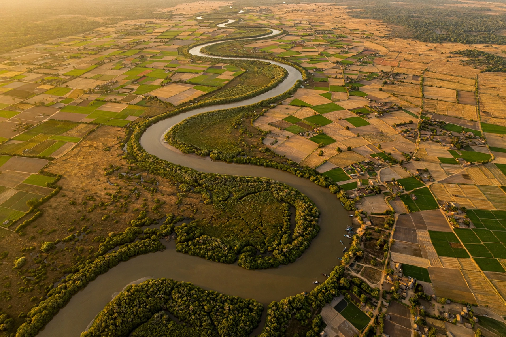

The Gambia
| Republic of The Gambia | |
|---|---|
 | |
| Capital | Banjul |
| Largest city | Serekunda |
| Official language | English |
| Independence from the UK | 18 February 1965 |
| Area | 11,295 km² |
| Population | ~2.7 million |
| Currency | Dalasi (GMD) |
The Gambia, officially the Republic of The Gambia, is a country in West Africa. It is the smallest country on mainland Africa, almost entirely surrounded by Senegal except for a short coastline on the Atlantic Ocean at its western end. The country is centred on the lower reaches of the Gambia River, which flows through its middle and empties into the Atlantic. Its capital is Banjul, and its largest city is Serekunda.
History
The Gambia River valley was part of the Mali and Songhai trading networks, and Kunta Kinte Island (formerly James Island) became a notorious centre of the Atlantic slave trade; it is now a UNESCO World Heritage Site. Britain established a colony around Banjul (founded as Bathurst in 1816), and the borders of British Gambia were fixed by agreement with France in 1889 — giving the country its distinctive narrow, riverine shape.
The Gambia gained independence in 1965 under Dawda Kairaba Jawara, who led the country, apart from a brief 1981 coup attempt suppressed with Senegalese help, until 1994. From 1982 to 1989 The Gambia and Senegal formed the Senegambia Confederation. In 1994 Yahya Jammeh seized power in a military coup and ruled for 22 years, a period marked by human rights abuses. Jammeh lost the December 2016 election to Adama Barrow but initially refused to step down; a constitutional crisis was resolved in January 2017 when ECOWAS forces intervened and Jammeh went into exile. Barrow was re-elected in 2021.
Geography
The Gambia is a narrow strip, less than 50 km wide at its widest, extending about 330 km inland along both banks of the Gambia River. The terrain is flat, dominated by the river's floodplain, mangrove swamps near the coast, and savanna further inland. The climate is tropical, with a rainy season from June to October.
Economy and demographics
Agriculture — especially groundnuts (peanuts) — fishing, and tourism are the mainstays of the economy, alongside significant remittances from the diaspora. The population of about 2.7 million is ethnically diverse: Mandinka are the largest group, followed by Fula, Wolof, Jola, and Serahuli. English is the official language; Mandinka, Wolof, and Fula are widely spoken. About 95 percent of Gambians are Muslim.